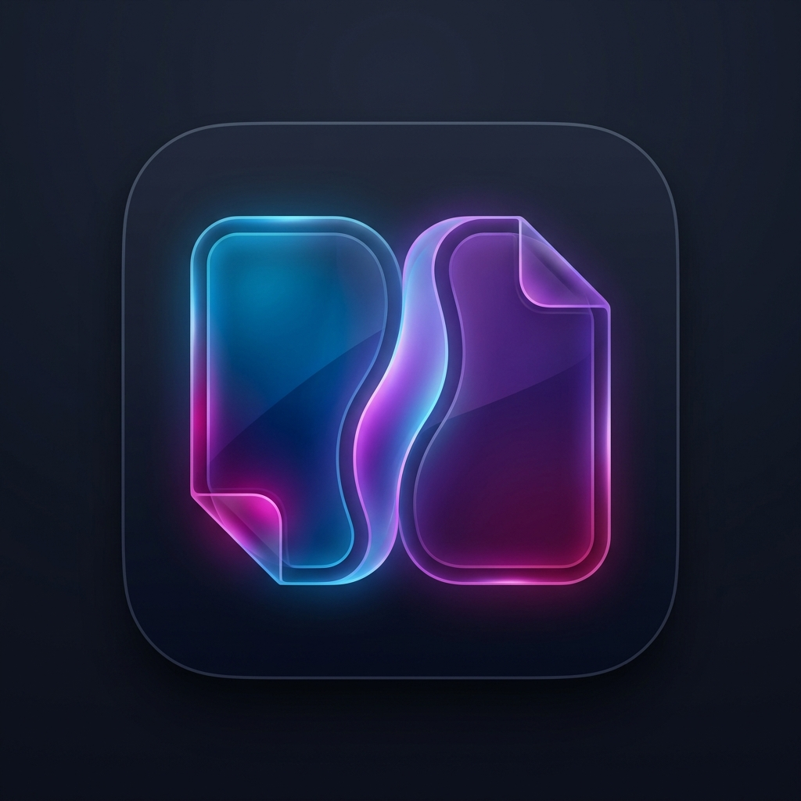
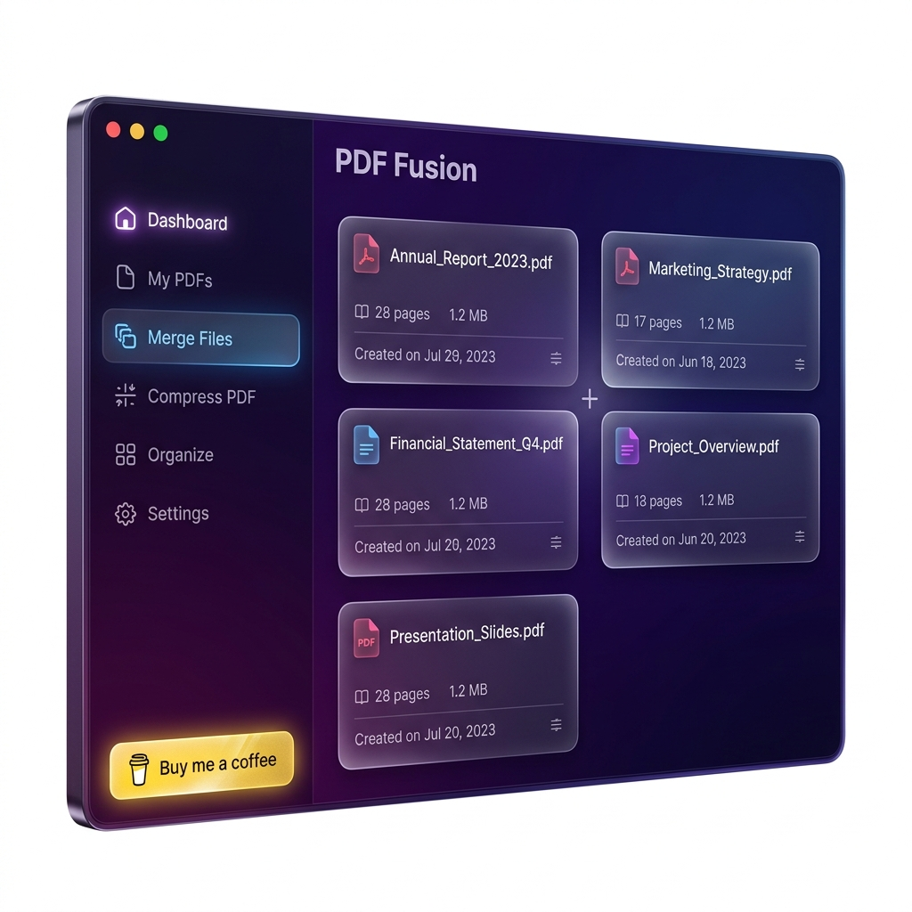
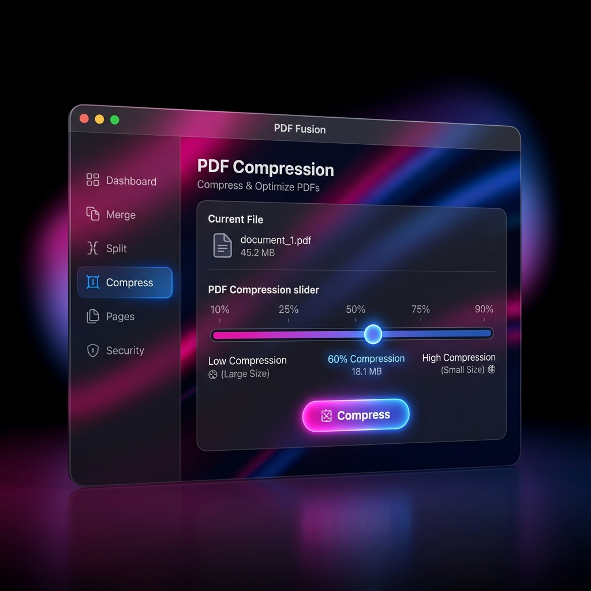

PDF StitchA beautifully crafted native macOS application meant to empower your productivity. Merging documents and optimizing PDF sizes has never looked this good—or been this fast.

Drag and drop multiple files to merge them. Our premium SwiftUI interface allows you to reorder, validate, and combine your PDF documents in seconds—all entirely handled locally on your Mac's silicon.
Don't let giant PDFs slow down your emails. Select exactly how much you want to compress your files using the intuitive dynamic slider. The app analyzes your document to estimate the final size before processing.

Need your PDF pages as standard images? Instantly export all your document pages to high-quality pristine PNG or JPEG files, fully customized to your preferred resolution and DPI.
PDF Stitch is available via a custom Homebrew tap for easy updates.
⚠️ First Launch: PDF Stitch is open-source and ad-hoc signed. On first open, macOS will block it.
Simply right-click the app → "Open" → "Open" to bypass Gatekeeper.
Alternatively, run xattr -cr /Applications/PDF\ Stitch.app in Terminal.